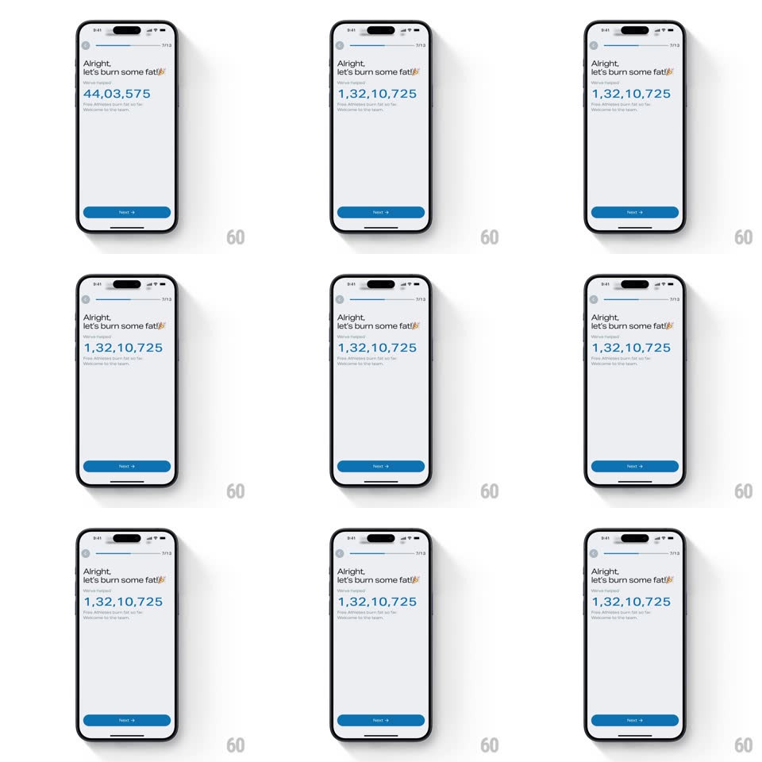

Media
Frame-by-frame

Rebuild this interaction 1:1: Freeletics' social-proof counter - under "Alright, let's burn some fat!", a giant blue number rolls upward from 0 to 1,32,10,725 like a slot-machine ticker, digits settling left to right.

Rebuild this interaction 1:1: Freeletics' social-proof counter - under "Alright, let's burn some fat!", a giant blue number rolls upward from 0 to 1,32,10,725 like a slot-machine ticker, digits settling left to right. ## Integration Integration: stack-agnostic spec - springs given as stiffness/damping, timed motions as duration + curve; map every value to your framework and animation library of choice. ## Scene Onboarding screen: progress bar (7/13) top, "Alright, let's burn some fat!" headline with a flame, a tiny "We've helped:" label, then the huge blue stat number, a two-line gray caption beneath, blue Next button pinned bottom. ## Motion spec Pattern: rolling-digit count-up ticker. - Each digit is a vertical reel of 0-9; on mount all reels spin and decelerate, settling left-to-right with ~90ms between digit landings (each landing: slight overshoot bounce, spring ~400/20). - Total settle ~1.6s; the number grows its separators live as digit count increases (Indian grouping: 1,32,10,725), so the string visibly widens mid-count. - The caption lines fade in staggered (150ms apart) once the last digit lands; Next pulses once (scale 1 -> 1.03 -> 1). - The headline and emoji are static throughout - all energy is in the number. ## Calibration - Blue is reserved for the number and Next; keep the rest grayscale. - The count must always start at 0 on entry - no mid-value fades. ## Reduced motion Number fades in at its final value. ## Don't miss - Digits land in reading order (left to right), which feels deliberate rather than mechanical. - The separator commas appear WITH their digit group, never orphaned.